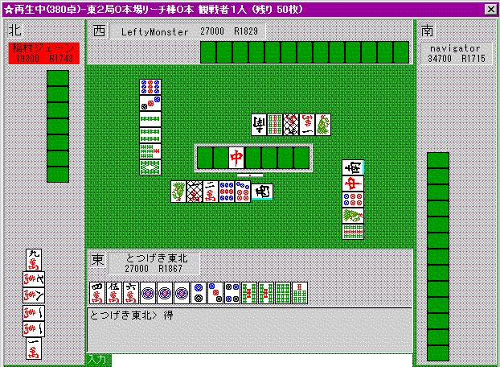
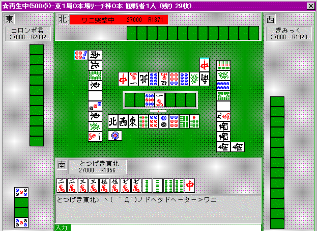

「読み」をやってみよう
（未完） とつげき東北
「読み」について：
とつは今まで何度も「相手の当たり牌を読むな！」「心理などというあやふやなものを根拠に打牌を決めるな！」と言ってきた。
今でも基本的にはこの姿勢は変わらないヽ( ´Д`)ノ
ある牌が、迷彩の先切りなのか、それとも単に不要だったのか・・・？ と「読んで」みるとしよう。
・・・ムリやって(笑)
相手も読みの裏をかこうとしているのかもしれないし、単にそうなっただけかも知れない。
もし相手が「サイコロを振って先切りするかどうか決めている」とすれば、こっちの真剣な「読み」って、めっちゃ恥ずかしいねん(笑)。
麻雀漫画に出てくるような「読み」の高度なやりとりは存在しない。
存在したとしても、「サイコロを振って決める」人が相手ならそれは全く通用しない。結局運のみ。その程度だ。
故に、麻雀は「読み合い」の勝負ではない。
仮に読み合いの勝負だとすれば、麻雀自体、サイコロ振りゲームと何ら変わらない、レベルの低いものということになる。
とつが技術として導入しようとする「読み」は、より合理的なものだ。
「誰が打っても、ほぼ最善手であるような、当然の打牌」を想定し、それに見合った打ち方で対処するということ。
例えば３メン待ちのダブリータンヤオピンフ手、これ、誰だってダブリーします。
もし 「３メン待ちダブリータンヤオピンフ手」 ならば → 「ダブリーする」 という命題が、常に真だとしていいでしょう。
ここから
「ダブリーしなかった」 ならば → 「３面待ちダブリータンヤオピンフ手ではない」 という、後件否定式も成立することがわかります。
こういうレベルのものこそが、麻雀技術向上に役立つ「読み」なのであって、あやふやで、日によって「読み？」の精度が変わるようなものなど、何らあてになるものではないのです。
とつ開発「読みのパターン」：
信頼度★★★ かなり信頼できる。盲目的に信じた状態の方が、何も知らない状態よりは平均順位が良くなるレベル。
信頼度★★ 「読み」としてまずまず信頼できる。過信は禁物だが、知らないよりは知っている方が平均順位は良くなる。
信頼度★ 偶然性に大きく左右されるため、変に信じてしまうと、下手すると弱くなるので注意。
パターン１：ドラ切りリーチにドラのスジヒッカケなし（信頼度★★★）
ドラというのは、それがあるだけで点数倍増なので、誰でも、できるなら持ちたいと思うものです。
誰でも → こうする という式が成り立つとき、「読み」の余地があると言えます。
例えば「ドラ切りリーチにスジヒッカケはない」というのは、ある程度通用する「読み」だと思います。
ドラが５の時、５７９からわざわざドラ５を切ってリーチするときというのは、手役がらみ（チャンタなど）くらいなものです。
ピンフやタンヤオの可能性もなく、ドラもないカンチャン待ちに、わざわざすることは通常ないからです。
他に、５８と持っていて、８を引いてシャンポンになったのでリーチ、というのもあるでしょうが、その場合手は安いでしょう。
上級者なら、そんなリーチは普通、しません（もちろんあがりトップとか、そういう事情があるなら別ですよ）。
パターン２：ドラ切りにチートイなし（信頼度★★★）
通常は、チートイツをやる場合、ギリギリまでドラを持っておきます。
リーチチートイツでは、せいぜい３２００くらいなので、いくら字牌待ちができると言っても、早い段階でドラを見切ることはないです。
パターン３：ツモ切りリーチにションパイのヤクハイ待ちはない（信頼度★★）
ドラだと別ですが。
ヤクハイ待ちは、比較的「出やすい」待ちだし、ダマにすると点数が非常に少ないので、ションパイであれば普通は即リーします。
１順程度置くことはあったとしても、何順も待ってツモ切りリーチ、ということは通常、ないです。
ただ、リーチのタイミングを知らない初〜中級者や、それこそ「裏をかいて」回す上級者もいますので、信頼度は高くないです。
パターン４：追っかけ手出しリーチにはソバテンが多い（信頼度★）
追っかけリーチする局面であれば、追っかけする側も一刻も早くリーチしたいわけで、いちいち数順回したりする余裕は少ないです。
尤も、たまたま入り目が待ち側であれば半々で「ソバテン現象」は起こらないので、あまり信頼するのもどうかと思いますが。
ただ、追っかけ手出し近辺の牌は、より一層危険、と覚えておきましょう。
パターン５：早いリーチに壁は安全、遅いリーチに壁は危険（信頼度★★）
例えば「８」が３枚見えている時、「９」は「壁で安全」と言われます。もう一枚の「８」をリーチ者がたまたま持っている確率が低く、従って７８による「６−９待ち」になっている確率も低い、というのが根拠です。
早い順目であれば、「壁」はかなり信頼できます。この場合の「８」は、他家・山にある確率が高いからです。
しかし、ある程度順目が遅くなると、「山」にある牌が減少しているため、「８」をリーチ者が持っている確率もだんだん高まってきます。
こうしたわけで、順目が遅くなると「壁」の信頼度はどんどん低下しますので注意しましょう。
また、例えば３家リーチに「８の壁」などほぼ無意味です。残り１枚の「８」は、山にあるか、あるいは他家が持っているからです(笑)。（もちろん、何もない無スジよりは、少なくとも２家に対して「安全」な分、安全度は高いですが）
パターン６：５の裏スジ、間４ケンは危険「特に食い仕掛けに対して」（信頼度★★）
早い順目に切られた数牌の１つ内側のスジを「裏スジ」と言います。
３が切られているとき４−７、９が切られているとき５−８が「裏スジ」です。
例えば５６８というメンツ候補からメンツを作るとき、８を切るので、この「裏スジ」は当たり牌になりやすく、危険、とされています。
特別に、「５」が切られている場合の裏スジは１−４と６−９の２つです。
また、３８と切られている場合、４−７は、この２つともの裏スジに当たり、「間４ケン」として危険とされています。
とは言え、裏スジというのはたくさんできるもので、いちいち「危険」「危険」と考えていたら、結局ベタオリするしかなくなるものです。
そこで特に警戒すべきものが、「５」の早切りに対する１−４、６−９です。
５というのは、もともと非常に使い道が多く、早い順目だと、他にきれいなメンツ候補がない限り、なかなか切らないからです。
そこで、リーチに対して、またヤクハイドラドラなど、食い仕掛けに対しても、相手がテンパイしている感じがあれば、５の裏スジや間４ケンは、切らないようにします。
逆に、序盤の切り牌の外側（早い７切りに対する８９など）は、比較的安全です。
特に食い仕掛けに対してこそ、これらは重要です。
食い仕掛けは、ポンやチーの効率を考えて、２２３などの形から２を先切りすることが少なく、ますます「裏スジ危険」になるからです。
親がヤクハイをポンしていたなら、ヤクハイドラ１程度でも放銃は避けたいところで、なるべく序順の切り牌の外側や、せめて裏スジにならない牌を切っていく工夫が必要です。
（一応言っておきますが、５の早切りに対して、１が通っているなら、１−４は「裏スジ」とは言え安全になりますね。もし２３があったから５を切ったなら、１は「当たり」になります。しかし１が当たりではないということは、２３があったために５を切ったのではなく、７８などのために５を切ったとか、または既に１２３が完成していると考えるべきで、いずれにしても４はむしろ安全、と言えるのです。パターンではなく理屈で理解すべき部分です。）
パターン７：ヒッカケ危険度は待ち牌の残り個数と正に相関する（信頼度★★★）
例えば、西北五七６と捨ててリーチ！ がかかったとしましょう。
６のスジ「３」は、けっこう捨てにくいですね。。
普通にテンパイを目指した場合、２４６から６を切ってリーチ、ということはしばしばあるからです。
しかし、例えば場に２枚「３」が見えていたら、これはかなり安心して「３」を切って良いです。
いくらヒッカケになるとは言え、残り２枚の牌でわざわざ待ってリーチ、というのは、平場では滅多にないことですね。
リーチするにしても、２４６から２を切って・・・と通常は考えます。
「場に３枚出ている牌をスジヒッカケ待ちリーチ」はほとんどない、「場に２枚出ている牌をスジヒッカケ待ちリーチ」もまずない、と考えていいでしょう。もちろん、場を見ていない初心者〜中級者なら別です。
「読み」として不適切な一般論：
不適切１：アンコスジは危険
ほとんどアテにならないと思っています。
一応理屈は、例えば５５５と持っていたら、「他家の６７などのターツがメンツとして完成していない可能性が高い」から５や８が当たりになる可能性も高まる、ということですが・・・。
じゃあ、同じ理屈で、自分がアンコを持っていたら、それ以外のスジは「やや安全」という風に考えられるか？ と言えば、そうでもないでしょう。
ほとんど誤差の範疇だと考えられ、勝負どころならアンコスジだろうが切ってリーチすべきだし、そうでないならアンコスジもクソもなく降りるべきだと思います。
「読み」の成功例：
上に書いた「パターン」は、とつが自分で考えながら作ったパターンで、しかもよくある状況について形式化したに過ぎません。
実際打つときは、常に頭を回転させて、状況に応じた「読み」（普通の人が言う「状況による読み」とは全く違う精度の）を行うわけです。
だから、パターン暗記も大事ですが、その場その場で自分でパターンを作れる能力が必要です。
以下はそうした「ヒラメキ」の成功した場面です。

ピンフへの手替わりを待っていたのですが、トイメンの９ソウで「ラグ（チーやポンの問い合わせで少し遅れること）」がかかりました。
９ソウでラグがかかり、直後に上家が染め手で７ソウを手出ししたということは、「上家が７８ソウ落としをしている」可能性が高いということです。
もちろん、下家が９ソウを２枚持っていて「ポン」の準備をしたのかもしれませんが、１順目に切っている９ソウを５順目にトイツにしている、ということは、効率上非常に悪いことで、通常はまずしない（この部分が「読み」です）ことだと考えられるのです。
そこで「上家の７８ソウ落とし」であると考え、西をツモ切りリーチ。一発で８ソウを討ち取った瞬間です。

上は、「相手の読みの裏をかいた」場面です。
前の順にトイメンが中を切った時、ラグもかからず、「中は恐らく誰もトイツで持っていない」という情報を全員が知ったわけです。
とつはその時、チートイのドラ待ちでダマテンしていました。
ちょうどよく、中をツモってきたので、ドラを切ってリーチ。中待ちリーチチートイドラドラを一発で上がりました。
トイメンの、ワニ突撃中が不用意だったわけではありません。
「中は恐らく誰もトイツで持っていない」ことが明白で、そうすると「この一巡の間にたまたま中をツモってトイツにした可能性は極めて低い」こともわかるでしょう。
そしてわざわざドラ切りリーチですから、単騎待ちの可能性も比較的低い、と相手は「読む」でしょう。
そうなると、こんな中は、「完全ベタオリ」でもしていない限り、なかなか止められないはずです。
カン裏期待で、できればみんな、リーチで上がりたい局面でもあります。
これらの成功例は、「早切りで迷彩」だとか、そういうレベルの「読み」に対して、明らかに合理的で、限りなく成功しやすいものと思えませんか？